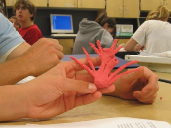
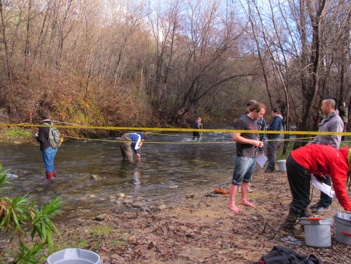
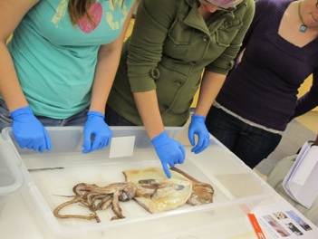
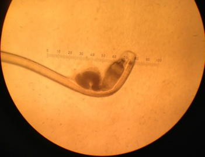

Robin Elahi, PhD
Marine Community Ecology and Population Biology
Teaching
Like science, teaching is an iterative process that includes constant reflection, acceptance of errors, and discovery. To date, I have taught in a variety of capacities - as a teaching assistant, lecturer, and high school teacher. Over the past decade, I have developed the core of my undergraduate teaching philosophy. Rather than recite a list of facts (e.g., types of species interactions), I aim to reveal the general underlying principles using a conceptual framework (e.g., simple population models). I am also dedicated to teaching skills (e.g., programming, statistics) that are relevant across disciplines. In short, I aim to equip students with the intuition and tools to measure nature.

Student at Friday Harbor High School shows off his urchin larva (pluteus stage)

CSUMB Ecology students setting up riparian transects at Garland Ranch Park.

CSUMB Marine Biology students dissecting a Humboldt squid.

It was a boy, and this was one of his spermatophores!